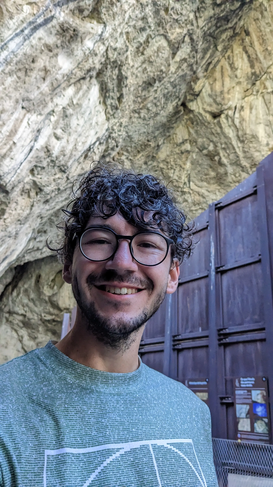
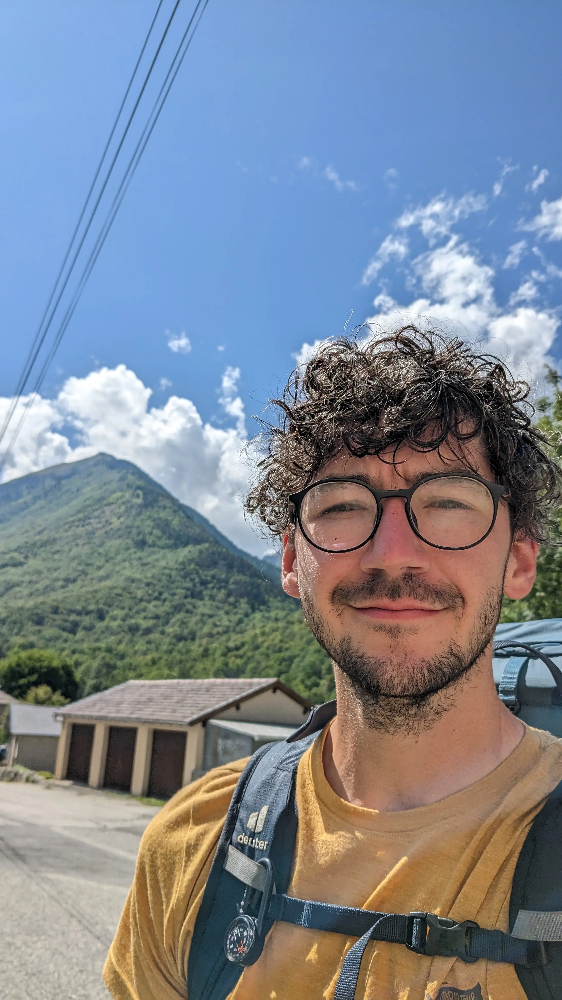
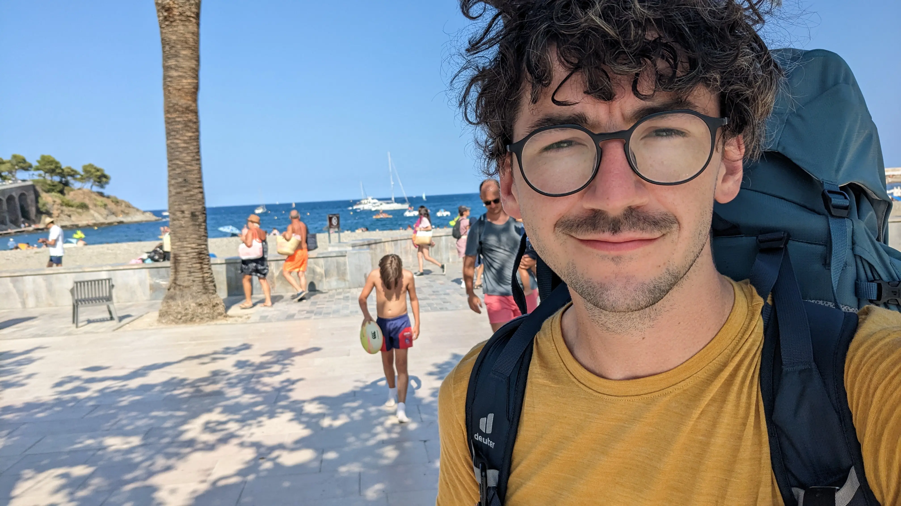
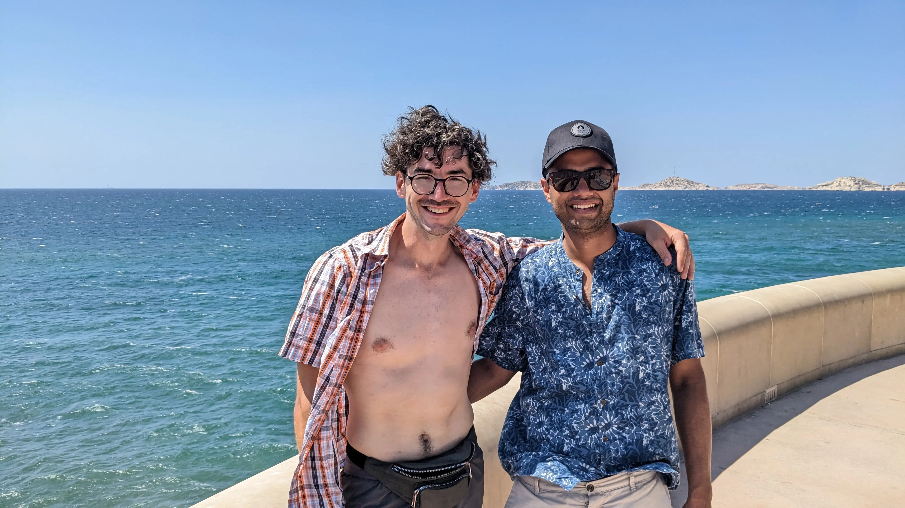
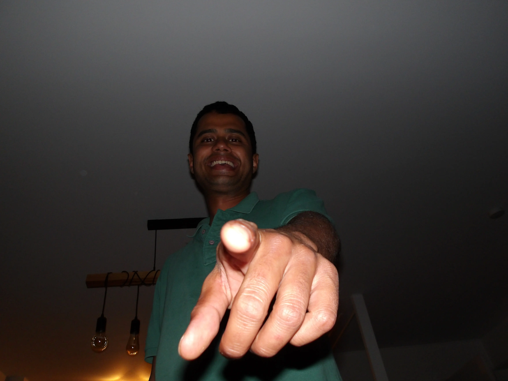

This page exists to give the latest update verifying the living status of Bryan.
Status: ALIVE
Last Updated: 2024-09-07
| Location | Date | Update | Photo |
|---|---|---|---|
| La Grotte de Niaux | 2024-09-07 | Took a shortcut since weather looked dodgy and didn't want to risk missing my train from Toulouse (or the Braderie). Concluded my hike of ~300km with a tour of some Magdalenian cave drawings! |  |
| Siguer | 2024-09-05 | A lot of rain recently has slowed progress and rendered everything damp and dirty. | |
| Mérens-les-Vals | 2024-09-02 | It rained yesterday, so that was a bummer. On the bright side, this section has some nice, clear-watered lakes to swim in on hot afternoons. |  |
| La Cabanasse | 2024-08-31 | I'm getting better at optimizing my food and there is more water available in this region, so my pack is overall lighter. | |
| Mantet | 2024-08-29 | Passing through Mantet this afternoon. I took a detour to summit Peak de Canigou yesterday with a small group of Germans and Spaniards. | |
| Arles-sur-Tech | 2024-08-26 | Arrived here just after noon. Le Tech is the name of the river that runs along the village. No major physical problems so far with my current pace. | |
| Perthus | 2024-08-24 | Stopped here with Roberto to grab a coffee and get more food | |
| Banyuls-sur-Mer | 2024-08-22 | I arrived on the train this afternoon to nice, sunny weather. I did my groceries and now starting on the trail. |  |
| Marseille | 2024-08-21 | Me and Rishik are biking along the coast in Marseille |  |
| Marseille | 2024-08-20 | Arrived at 17h45 with Rishik, will be staying with Myriam. |  |
{kind=link}
{kind=link}
{kind=link}
{kind=link}
{kind=link}
{kind=link}
{kind=link}
{kind=link}
{kind=link}
{kind=link}